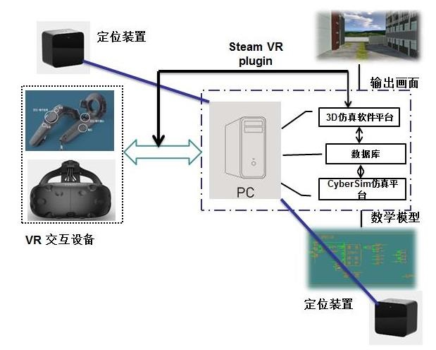
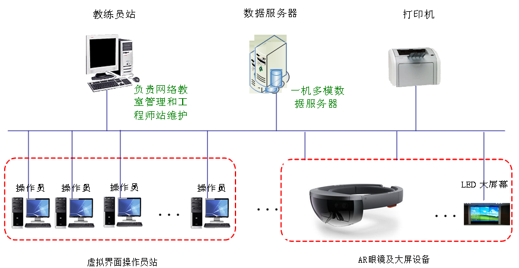
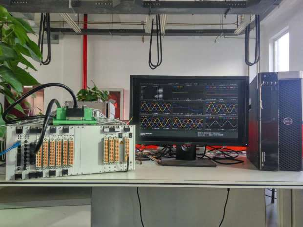
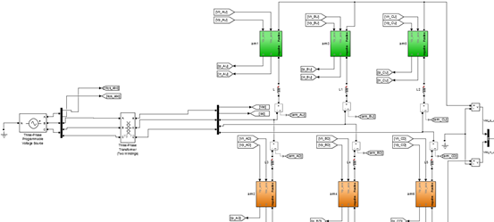

2019-03-15仿真事业部
基于VR虚拟现实技术的变电站仿真技术可以为继电保护运行人员提供直观了解变电站一次、二次设备运行、测试、维护、检修的平台，提供可视化、真实的现场真实感，弥补学员对变电站一次、二次设备特别是二次回路运行检修经验不足、测试条件不完整的弊端，实现故障异常模拟、设备功能测试、攻防能力测试等.
将AR增强现实技术应用于变电站设备检修及运维工作，借助AR技术在图像辨识、影像重构、信息交互方面的优势，通过终端设备扫描捕捉被检查设备的图像信息，并与后台数据库信息进行比对，能够自动检查发现设备的异常，发出提示信息，能够杜绝人工检查的错误。可以查看标准操作规范图像或视频，运用远程专家指导功能，实时进行远程协作及工作指导，使巡检人员有效完成智能巡检。
利用多种先进的计算机技术，使VR/AR输入输出等传感器设备与变电站仿真软件连接通讯。采用数据库形式存储数学仿真模型和3D模型的实时状态信息，通过通讯方式实现两者的状态一致。VR/AR技术软件结构图如下：


SF-RTSIM实时数字仿真系统由Host主控计算机、实时仿真目标机和接口/运算加速装置构成。Host主控计算机借助Matlab/Simulink及SF-RTSIM工具箱进行模型搭建、GUI界面显示、波形触发存储、实时参数调节等；实时仿真目标机则实现物理模型的实时运行、波形实时显示等功能；接口/运算加速装置则主要负责链式结构模型的FPGA加速运算，以及多种接口的驱动管理。系统为电力电子控制、保护系统提供了丰富的实时模型、实时测试解决方案与平台支撑。

图2 SF-RTSIM实时数字仿真系统照片

图3 单端柔性直流实时数字仿真模型
四方股份为您提供优质的解决方案
如有任何问题，请与我们联系
邮箱：jiahailin@sf-auto.com
电话：15110053460